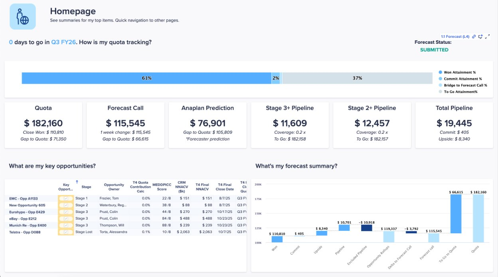

Sales Forecasting
The newest app in the RPM suite — now generally available
Sales Forecasting went GA at the time of this workshop (March 2026). This is the fourth app in the RPM suite. ICM (Incentive Compensation Management) remains on the roadmap and will complete the five-pillar suite when it ships.
What Sales Forecasting Does
Sales Forecasting answers one question: what is the team actually going to close this quarter? It provides a structured, governed process for sellers to submit forecast categories, managers to review and roll up, and RevOps to analyze pipeline health — all in one place, connected to the broader RPM planning data.
Core Capabilities
- Forecast Submission: Sellers submit forecast categories (Commit, Upside, Pipeline) with deal-level detail
- Manager Roll-up: Structured hierarchy roll-up with comparison to quota and AI-assisted prediction
- Scenario Planning: Worst case, most likely, best case scenario modeling across the pipeline
- Pipeline Analysis: Week-over-week pipeline change tracking, hygiene enforcement, and stage velocity
- Account Planning: White space analysis and cross-sell/upsell opportunity identification
- Historical Performance: Win/loss analysis, pipeline conversion rates, trend visualization
What It Is Not (Yet)
- Not a Salesforce replacement — does not manage opportunity records; reads from CRM
- Not real-time — batch data refresh via ADO or A4S, not live CRM streaming
- Not bidirectional — forecast decisions made in Anaplan do not write back to Salesforce currently
- No configurator — you get it as-is with limited configurability vs. T&Q, Segmentation, or Capacity
Lead with what it does well — structured forecast collection, scenario modeling, pipeline hygiene. Don't oversell the integration until write-back is available.
How It Connects to the RPM Suite
T&Q → Sales Forecasting
Quotas set in T&Q flow into Sales Forecasting as the benchmark. Forecast attainment is tracked against the quota each rep carries — which is why clean quota data in T&Q is a prerequisite for meaningful forecast reporting.
Natural Follow-on
Sales Forecasting is a strong second engagement after T&Q goes live. The quota data is already structured correctly, the customer trusts Anaplan, and Sales Ops has a natural appetite for better forecast visibility after solving the quota problem.
Data Integration
| Integration | Method | Notes |
|---|---|---|
| Salesforce (CRM) | Anaplan for Salesforce (A4S) or ADO | Primary data source — opportunities, stages, amounts, close dates |
| Quota data | T&Q export → import | Connects rep quotas from T&Q to forecast attainment tracking |
| Write-back to Salesforce | Not yet supported | Inbound only — forecast decisions stay in Anaplan |
App Screenshots

What Partners Need to Know
No configurator means faster time-to-value but less flexibility. The app is designed to work well out of the box — resist the urge to extend it heavily before the customer has used it. Let them run the base app for a quarter and identify their real pain points before scoping extensions.
Sales Forecasting surfaces CRM data quality issues immediately — missing MEDDPICC fields, stale stage dates, and incorrect close dates all become visible. Brief customers on this before go-live: the app will expose their Salesforce hygiene problems on day one. That's a feature, not a bug — but they need to be prepared.
Roadmap Context
Sales Forecasting is the fourth of five planned RPM pillars. The suite will be complete when ICM (Incentive Compensation Management) ships. ICM is the highest-pain SPM problem — every customer hates their current comp tool. Watch the roadmap closely.
| Pillar | App | Status |
|---|---|---|
| Territory & Quota | T&Q Planning App | ✅ GA — V3 launching May 2026 |
| Account Segmentation | Account Segmentation & Scoring | ✅ GA — V2 imminent |
| Capacity Planning | GTM Capacity Planning | ✅ GA — V2 imminent |
| Sales Forecasting | Sales Forecasting App | ✅ Now GA (March 2026) |
| Incentive Compensation | ICM App | 🔜 On roadmap — TBD 2026 |